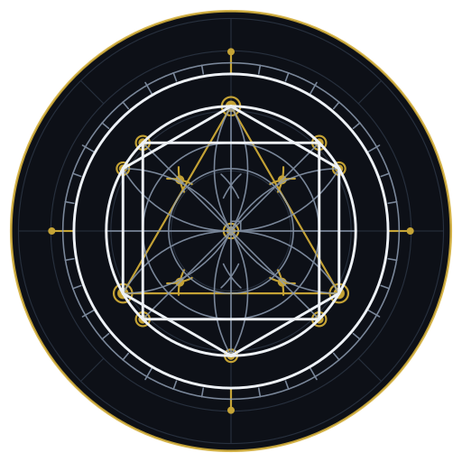

Geometric Fundamentals¶

Geometric Fundamentals preserves and formalizes the constructive geometry archive of Fred W. Seelig, spanning 55 axiomatic and projective studies across 353 handwritten manuscript folios and 59 computational worksheets. From elementary compass-and-straightedge constructions and circle pencils to harmonic conjugates, pole-and-polar duality, and barycentric triangle loci, every topic pairs Seelig’s original notebook pages with exact SymPy derivations and interactive vector diagrams.
Codex & Computational Workbooks¶

3-Track Book Codex · F.1–F.55 · 353 Manuscript Folios
Fundamentals of Constructive Geometry — Explore all 55 foundational topics organized across three synchronized tracks: Synthesis (formal enunciations, constructive signatures, and calibrated SVG diagrams), Folios (high-resolution scans 0001.jpg–0353.jpg with diplomatic transcriptions), and Code (executable geometor.model scripts).
OpenDocument Workbooks · 59 Worksheets · Canonical (5, 6, 7) Triangle
Computational Spreadsheets & Barycentric Workbooks — Inspect Fred Seelig’s Triangles and Circles.ods and companion workbooks verifying homogeneous barycentric coordinates, Conway triangle notation, coaxial circles, and harmonic divisions on the canonical $(a, b, c) = (5, 6, 7)$ reference triangle.
Key Features¶
Synchronized Synthesis, Folios & Code
Read every topic in modern formal synthesis, view the original handwritten manuscript scan side-by-side, or inspect the standalone SymPy model.py script.
353 Archival Manuscript Pages
Monotonic folio provenance across 0001.jpg–0353.jpg preserves Seelig’s pencil-and-ink drawings, marginal derivations, and notebook sequence.
Verified Triangle & Projective Loci
Every topic ties classical synthetic proofs to exact algebraic invariants over the canonical $(5, 6, 7)$ triangle and Graphviz dependency graphs.
Reference & Project¶
Scholarly Apparatus
People — Profiles of Fred W. Seelig, John Horton Conway, Clark Kimberling, Nathan Altshiller-Court, Paul Yiu, and C. Stanley Ogilvy
Bibliography — Archival notebooks, OpenDocument workbooks, and classical geometry references
Glossary — Definitions of barycentric coordinates, harmonic conjugates, coaxial pencils, and invariants
About This Project
About This Edition — Archival scope, provenance, and exact symbolic methodology
Using This Edition — Reader guide to interactive vector plates, folio viewer, and Python API
Research Log & Python Modules — Compilation notes, Changelog, and Connect